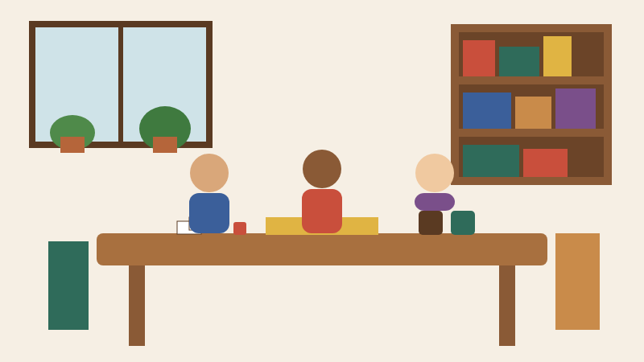

Hours
| Day | Hours |
|---|---|
| Monday | 7:00 AM to 9:00 PM |
| Tuesday | CLOSED |
| Wednesday | 7:00 AM to 9:00 PM |
| Thursday | 7:00 AM to 9:30 PM |
| Friday | 7:00 AM to 10:00 PM |
| Saturday | 8:00 AM to 10:00 PM |
| Sunday | 10:00 AM to 6:00 PM |
We are closed on Tuesdays for deep cleaning, inventory, and staff training.
Visit Us
17 Lantern Lane, Juniper Falls, TX 71234
Phone: (555) 013-7712
Email: hello@sidequestcoffee.example
About Side Quest

Side Quest Coffee Co. is a neighborhood coffee shop, and analog tabletop games are a big part of why people stay. We have shelves of board games, card games, dice, and chess sets, plus a big community table in the middle of the room.
You were on your way somewhere else and ended up having an unexpectedly good afternoon. That is the Side Quest idea.
You do not need to be "a board-game person" to come here. Some of our customers play every week. Some have not played anything since Monopoly when they were ten. Both are welcome. Stop in to work, meet a friend, or just grab a coffee.
Menu Favorites
| Item | Price |
|---|---|
| Drip coffee | $3.25 |
| Cold brew | $4.50 |
| Maple latte | $5.25 |
| Chai latte | $4.75 |
| Cinnamon roll | $4.00 |
| Egg and cheddar breakfast sandwich | $6.50 |
| Soft pretzel with mustard | $5.50 |
Weekly Events
- Open Table Thursday: every Thursday, 6:30 to 9:30 PM. Bring your own game or grab one from our shelves. Coming alone is fine.
- Chess & Coffee: every Sunday, 11:00 AM to 1:00 PM. Casual. You do not have to be good at chess.
- Learn-a-Game Night: the first Wednesday of each month, 7:00 to 8:30 PM. A staff member picks a game and teaches it.